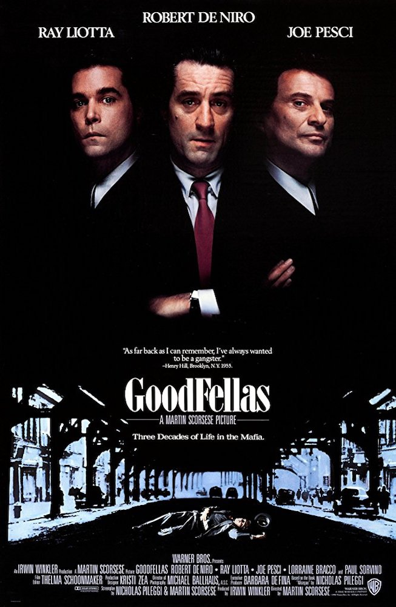
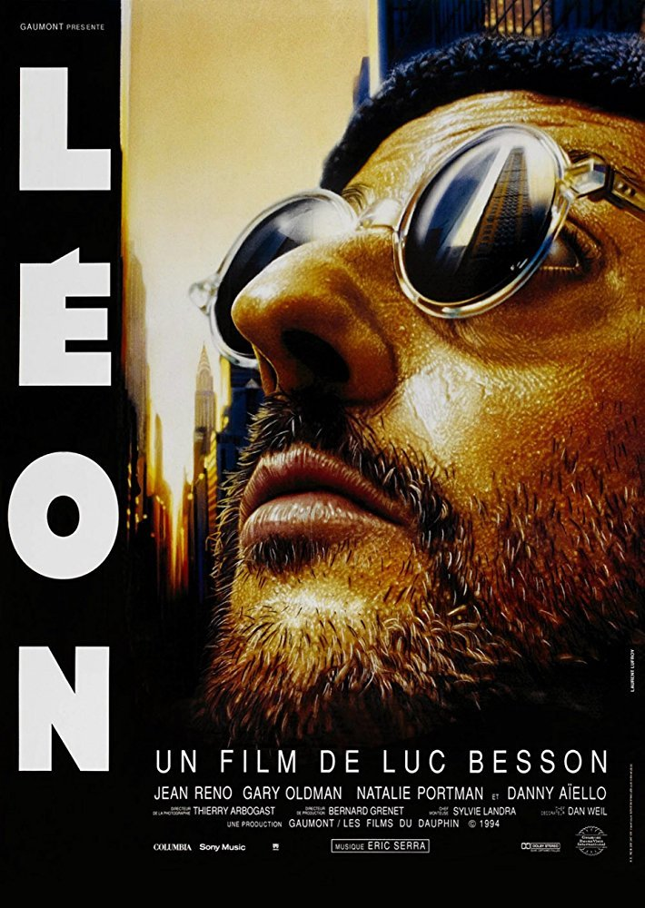
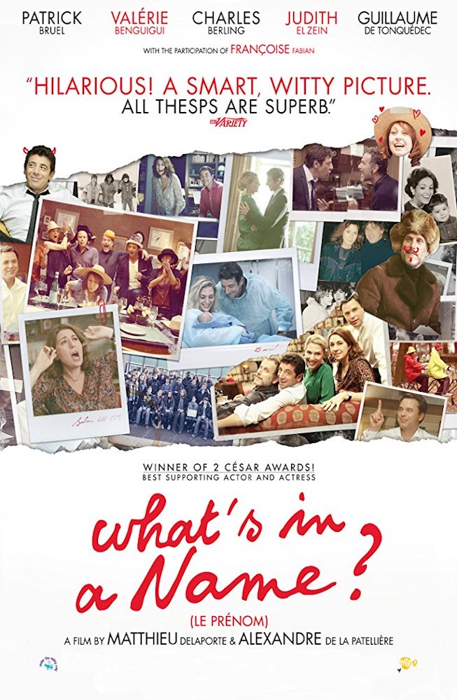

I'm starting my postgraduate degree in September. Currently I'm at Le Wagon and learn how to code.
|  | 1990 - Good Fellas |
The story of Henry Hill and his life in the mob, covering his relationship with his wife Karen Hill and his mob partners Jimmy Conway and Tommy DeVito in the Italian-American crime syndicate. |
|  | 1994 - Leon der Profi |
Mathilda, a 12-year-old girl, is reluctantly taken in by Léon, a professional assassin, after her family is murdered. Léon and Mathilda form an unusual relationship, as she becomes his protégée and learns the assassin's trade. |
|  | 2012 - Der Vorname |
Vincent is about to become a father. At a meeting with childhood friends he announces the name for his future son. The scandalous name ignites a discussion which surfaces unpleasant matters from the past of the group. |